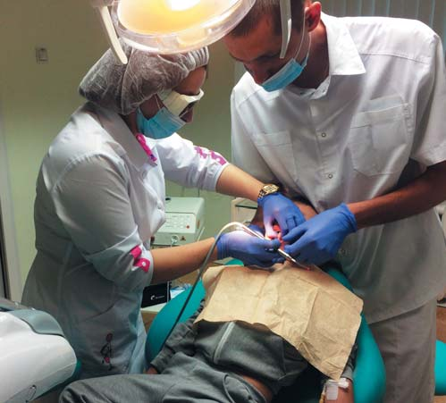
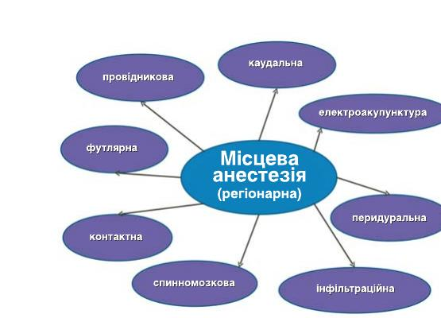
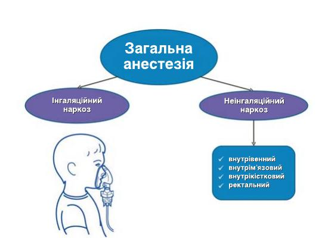
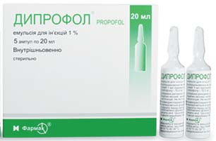
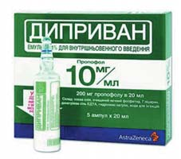
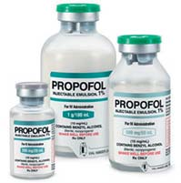
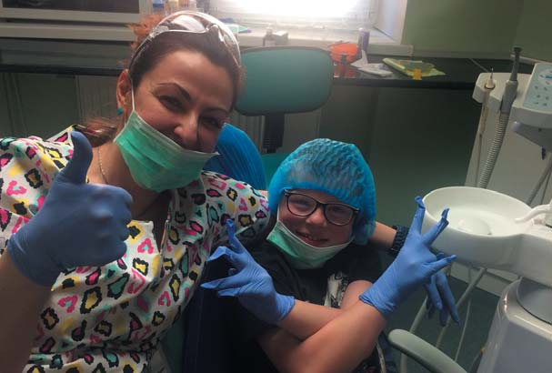

Практичний досвід · журнал «ДентАрт» 2017 №4
Наркоз чи седація в стоматології: відмінності і переваги
NARCOSIS OR SEDATION IN DENTISTRY: DIFFERENCES AND ADVANTAGES

Проблема болю і знеболювання з давніх часів привертала увагу людей. В останні роки різко зріс інтерес до застосування знеболювання при одній з наймасовіших форм медичного обслуговування – лікуванні зубів. У зв'язку з виникненням больового синдрому і психоемоційного дискомфорту при стоматологічних втручаннях хворі відмовляються від своєчасної стоматологічної допомоги, що розширює межі цієї медичної проблеми до соціально значущої.
Проблема контролю над болем особливо актуальна у дитячій стоматології, де її завдання багаторазово збільшуються і мають свою специфіку. Поведінкою дитини керують емоції, які посилюються фізіологічною непереносністю болю дітьми, особливо молодшого віку. Емоція страху – одна з найсильніших, здатних доходити до неконтрольованого стану афекту.
У дитячій стоматології існують три завдання щодо створення комфорту при наданні лікувально-профілактичної допомоги дітям:
- не допустити у дитини виникнення страху, сформувати спокійну природну потребу у відвідинах стоматолога;
- переломити ситуацію, якщо страх уже сформувався, тому що більшість дітей приходить на прийом, уже маючи негативний досвід;
- кожній дитині забезпечити ефективну і безпечну анестезіологічну допомогу.
Запобігання страху, адекватне знеболювання під час лікувальних процедур, що забезпечує безпеку пацієнта і враховує його початковий стан, вимагають спеціальних знань і навичок, які можуть бути реалізовані лише спільними зусиллями стоматологів та анестезіологів.
Види загальної анестезії
Сучасний арсенал засобів і методів загального та місцевого знеболювання досить великий. Щоб у ньому чітко орієнтуватися, максимально використовувати всі його можливості, потрібна чітка класифікація методів знеболення, хоча на сьогодні існують різні точки зору з цього приводу не тільки у людей, які не пов'язані з медициною, а й у самих медиків. Доцільно відрізняти вид анестезії від способу її отримання. Є чотири основних види знеболювання: загальне, місцеве, комбіноване і потенційоване. Способів знеболювання значно більше, оскільки одна і та сама речовина може вводитися в організм різними шляхами (схема 1).
Усі методи знеболювання поділяються на дві великі групи. Найчастіше використовують комбінацію інгаляційних та неінгаляційних анестетиків (комбінований наркоз) (схема 2).
Застосування для загальної анестезії однієї речовини має назву мононаркозу, або однокомпонентного наркозу. Використання мононаркозу в сучасній анестезіології є досить проблемним питанням, тому що на сьогодні немає речовини, яка задовольняє всі вимоги адекватної анестезії.
Одним із підвидів наркозу є медикаментозна седація, яка має дуже важливе значення у педіатричній практиці і на дорослому прийомі при різних як коротких, так і триваліших лікувальних маніпуляціях та діагностичних процедурах.
На сучасному етапі медикаментозна седація ідеально підходить для стоматологічної практики як дитячого, так і дорослого амбулаторного прийому, оскільки в цих умовах пацієнт повинен за мінімально короткий термін відновити повну адекватну свідомість і мислення.


Схема 1. Схема 2.
На відміну від стану наркозу, який характеризується оборотним пригніченням ЦНС з виключенням свідомості, пригніченням чутливості і рефлекторних реакцій, зниженням тонусу скелетних м'язів, при використанні медикаментозної седації у пацієнта зберігаються всі життєво важливі рефлекси, такі як дихальний, ковтальний, кашльовий рефлекс, що дуже важливо саме для амбулаторного прийому, оскільки пацієнт протягом години після закінчення лікування при повній притомності вирушає додому.
Ще однією суттєвою особливістю є те, що при медикаментозній седації у стоматології не використовуються наркотичні анальгетики, а больовий рефлекс можна усунути місцевими сучасними анестетиками, тому пацієнти після закінчення лікування швидко прокидаються і не відчувають таких побічних ефектів, як запаморочення, нудота і блювота. Медикаментозна седація також можлива і з застосуванням інгаляційних анестетиків, таких як закис азоту і севоран, але такий варіант можливий при короткочасних стоматологічних процедурах, і в цьому разі рівень виключення свідомості є мінімальним, також цей метод не працює у некооперабельних наляканих дітей.
Показання до медикаментозної седації у дитячій стоматології
Слід зазначити, що специфіка амбулаторної анестезії накладає відбиток на визначення показань до проведення загального знеболювання. Передусім це важка і поєднана супутня патологія. По-друге, необхідність швидкої постнаркозної адаптації, що не дозволяє повною мірою використовувати методики і лікарські засоби, які застосовують у стаціонарі. Тому абсолютними показаннями до медикаментозної седації в амбулаторній стоматологічній практиці є такі:
- захворювання ЦНС, які супроводжуються зниженням інтелекту (олігофренія, хвороба Дауна, важкі форми шизофренії, аутизм і т.д.);
- важкі форми ДЦП і неврологічні захворювання, що супроводжуються зниженням судомного порогу;
- медикаментозна поліалергія;
- підвищений блювотний рефлекс.
Усі інші показання можна вважати відносними. Одним з відносних показань до медикаментозної седації при лікуванні зубів у педіатричній практиці слід також вважати неконтактність дитини на огляді у лікаря-стоматолога (цей аспект може розглядатися і з точки зору вікових особливостей маленьких пацієнтів).
Протипоказання до медикаментозної седації
Гострі інфекційні захворювання, гострі захворювання печінки і нирок, некомпенсований цукровий діабет, тяжкі форми рахіту, повний шлунок (менше трьох годин голоду). У цих випадках потрібна спеціальна підготовка дитини.
Переваги медикаментозної седації
- Економія часу. Під медикаментозною седацією можливе лікування великої кількості зубів за один сеанс.
- Абсолютна безболісність. Стоматолог має справу зі сплячим пацієнтом.
- Відсутнє емоційне напруження, бо пацієнт при лікуванні зубів під медикаментозною седацією не відчуває запахів, не чує шуму бормашини, не бачить медичних інструментів і т.д.
- Відсутня не тільки больова, але й тактильна чутливість, пацієнт не відчуває вібрації, тиску, стиснення і т.д.
- Після лікування зубів в умовах медикаментозної седації відсутні біль і парестезії у місцях ін'єкцій місцевого анестетика. Іноді при незначних каріозних ураженнях або з урахуванням віку (діти до трьох років) місцева анестезія не проводиться.
- Після видалення зубів істотно знижується ризик розвитку альвеолітів (запальних ускладнень).
- При лікуванні зубів під медикаментозним сном вводяться препарати, які знижують утворення слини, що полегшує умови роботи в ротовій порожнині у дітей.
- Як правило, і видалення, і лікування зубів здійснює один лікар, який несе повну відповідальність за остаточний результат санації.
Перед процедурою санації ротової порожнини лікарі проводять інтерв'ю з батьками, в ході якого ретельно збирається анамнез життя дитини і спеціальна інформація, яка становить інтерес для анестезіолога. Також батьків інформують про хід проведення майбутньої медикаментозної седації, можливі побічні ефекти або ускладнення, а також обов'язковою умовою є отримання їхньої згоди на ці маніпуляції (це необхідно з юридичної точки зору). Крім цього, слід пройти ряд лабораторних досліджень, хоча їх перелік донині є дискутабельним питанням. На наш погляд, необхідним мінімальним обсягом лабораторних показників є загальний аналіз крові, загальний аналіз сечі, електрокардіограма, а також висновок педіатра (за наявності супутньої патології – консультація фахівця).
Перед початком санації пацієнтові слід дотримуватися режиму передопераційного голодування не менше трьох годин (хоча ці терміни можуть варіювати з урахуванням віку дитини і загального стану її здоров'я).
У зв'язку з появою в сучасній анестезіології нового покоління внутрішньовенних анестетиків цей вид медикаментозної седації став застосовуватися ширше. Одним з препаратів, які найчастіше використовуються на амбулаторному стоматологічному прийомі, є пропофол (дипрофол, диприван) – це короткодіючий гіпнотик зі швидким ефектом, у дітей застосовується з 1985 року. Викликає швидку втрату свідомості (протягом 30-40 с) з наступним швидким відновленням (після закінчення його введення) і також зі швидкою активацією моторики. У цілому пропофол – найбільш прийнятний гіпнотик для загальної внутрішньовенної анестезії і за необхідності чудово поєднується з опіатами, кетаміном, мідазоламом та ін.



Необхідним компонентом медикаментозної седації є моніторинг стану пацієнта під час лікувальних маніпуляцій з метою своєчасної діагностики відхилень життєво важливих функцій організму і профілактики тяжких ускладнень, в тому числі зупинки серця і дихання. В обов'язковий мінімальний моніторинг пацієнта входять вимірювання температури тіла, артеріального тиску, пульсоксиметрія, ЕКГ-моніторинг, також бажано контролювати нейром'язовий блок.
Виконання всіх перерахованих вище етапів і чіткий алгоритм дій, який можливий лише при кваліфікованій злагодженій роботі команди лікаря-анестезіолога і лікаря-стоматолога, забезпечать проведення ефективного і безпечного сеансу лікування дитини під медикаментозною седацією.

Висновки
На закінчення хотілося б зазначити, що медикаментозна седація жодним чином не є панацеєю при лікуванні зубів у дітей. Цей вид знеболювання швидше варто розглядати як варіант ургентної, «швидкої допомоги» нашим маленьким пацієнтам, коли через вік дитини, або критичний стан зубів, або загострення патологічних процесів у ротовій порожнині у нас немає ні часу, ні можливості на адаптацію дитини до стоматологічного лікування. Лише в цьому випадку ми вдаємося до загального знеболювання, щоб надати одномоментну, швидку і якісну стоматологічну допомогу. Але під час наступного візиту лікареві-стоматологу потрібно буде застосувати всі свої знання і вміння для того, щоб прихилити до себе маленького пацієнта і викликати у нього бажання з радістю приходити на контрольні огляди.